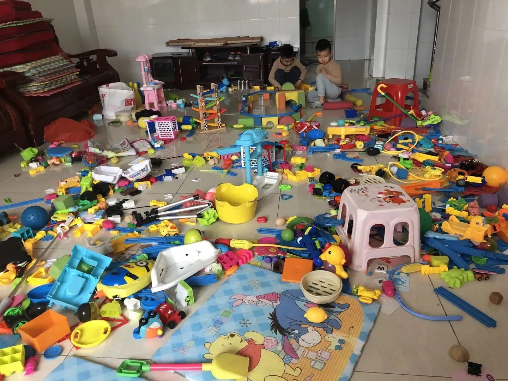
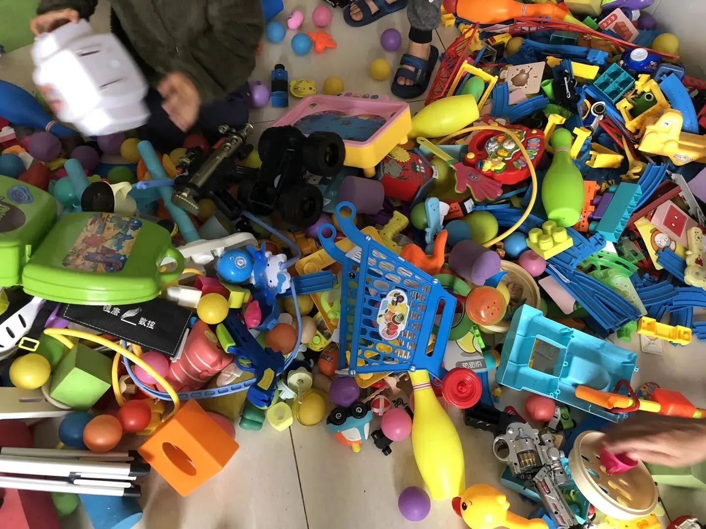
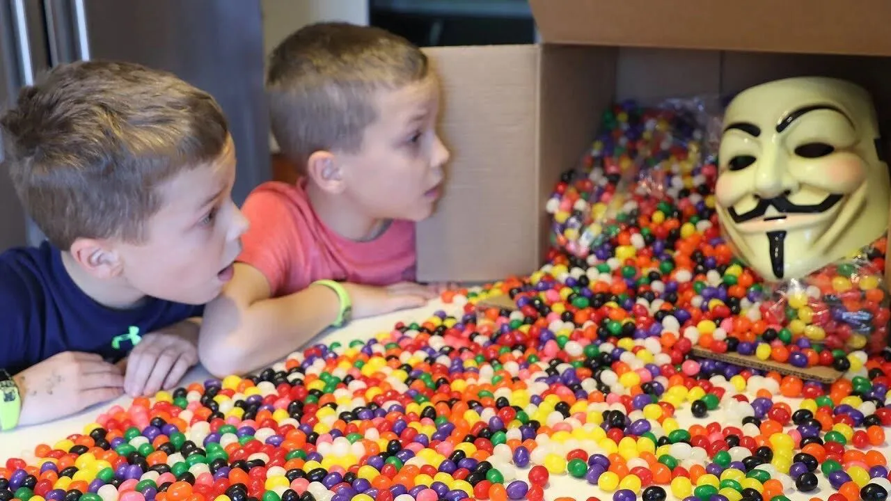
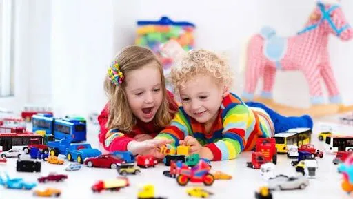
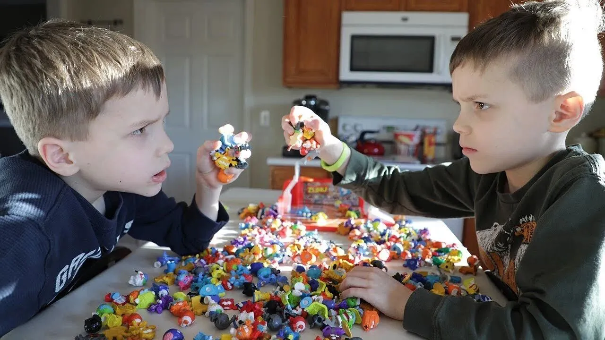
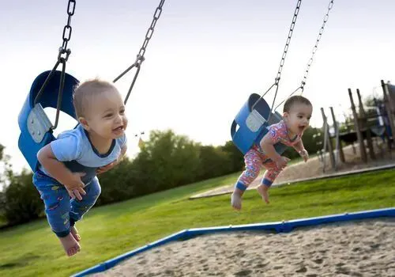

孖仔帮
公众号ID：twinsbang
关注
文|圆圈妈
网图|侵删
母亲节刚过，圆圈就在问我什么时候轮到他们的节日，才发现，原来儿童节就在前方不远处，难怪最近社群都在讨论给孩子们买什么玩具，公号后台也收到咨询有哪些好玩的玩具适合双胞胎玩？
我先不回答你，请看一组图！
这不是垃圾站，是我们家客厅某个角落，如图所示，散落一地的是玩具，从他们出生到现在，从某宝某东搬回家的玩具，更重要的是，这只是小部分，而已！
于我而言，觉得养育双胞胎烧钱的三大理由：1奶粉，2尿不湿，3玩具！
今天来谈谈给双胞胎败了一堆玩具后，我仿佛一夜间就明白的那些事。
不买超前的玩具
首先是不要买对孩子年龄来说太超前的玩具，那只能让孩子感到挫败，或者导致误用和滥用玩具。（摘自《斯波克父母经》）
我对这句话简直不能太赞同。
我给圆圈买衣服，会特意买大一码，指望着再大一点也能穿，给圆圈买玩具也一样，从来不参考玩具外包装提示的适用年龄，自以为买大孩子玩的玩具，可以从小玩到大。
结果就是他们还没长大，玩具就坏了，而且因为不符合他们的年龄要求，玩具并没有体现出价值，他们也没有因为玩具而感到快乐，反而因为难度大，让他们觉得很挫败感。
圆圈才2岁半，我就给他们买了200片装的拼图，企图让他们有事做能稍微消停一会，然而现实就是，他们专注力有限，在固定位置坐不了太久，而且拼图太多了，难度较大，他们拼了一会就发脾气哭，把拼图到处丢，最后的结局就是，拼图以五马分尸的姿态悲壮谢幕了！
不买功能单一的玩具
为什么有些玩具会有恒久的吸引力，怎么玩都不腻，而有些玩具却很快让人索然无味。我想，大概率是那些不耐玩的玩具功能单一，一眼到底，经不起推敲。
个人建议，纯娱乐类的玩具，如声光电玩具，发条玩具，电动玩具...偶尔用来撩下小月龄的宝宝就差不多了，而且宜精买，莫贪多。
圆圈一直很着迷轨道系列的玩具，我给他们买了一套又一套，类似款式，不同品牌，给玩具火车头上好发条，让它沿着轨道一圈又一圈地跑，他们起初就是兴奋地尖叫大喊，到最后看腻了，只能在边上看着无事可做。
很快，我就看到他们把火车头和轨道丢一边，拿起包装盒在玩，当大炮，充当望远镜，或者拿起画笔在上面涂写画画，而作为主角的轨道和火车厢却不受待见地打入冷宫。
好想问，为何当初不直接买个包装盒算了。
不买太多玩具
物极必反，玩具太多会破坏孩子专注力的培养。
买太多玩具的下场就是，明明一屋子玩具，却两手空空，哪个也不玩。
曾经，为了解放双手，我总是给圆圈买很多玩具，同时给他们不同的玩具，初衷很简单，我太累了，好想喘口气，让玩具暂时代替下我吧，因为不知道他们喜欢玩什么，干脆多买点，买不同的，总有合适的，但往往事与愿违。
跟其他小孩子一样，他们总是玩一下就觉得下一个会更有意思，等换了下一个又觉得再下一个有意思，这个小火车玩一下，下一秒去翻下绘本，觉得没劲了，就去搭积木，玩腻了又跑去玩拼图。
最后就是满屋子的玩具，散落一地等着我去收拾，我还没来得及享受那来之不易的空闲时间又要面临一个更让人崩溃的事情---他们一边丢着玩具，一边哭：“妈妈，我想要新玩具了！”
不是所有玩具都要一式两份
我们时常因为双胞胎抢妈妈而内疚不已，无奈妈妈只有一个，掰不了两半，深知那种母爱匀不了的痛很难受，于是在买玩具这件事情上，就想疯狂地弥补回来！
买，给我买！严格贯彻一式两份的方针政策，力求每人都有一份，不争不抢，还能避免两人因抢玩具而打架。
这看似很完美，实际并非如此。
5年带双胞胎的经验表明，甭指望给双胞胎人手一个玩具就能从根源上解决互相争抢的世纪大难题。
在孩子们的眼中，永远都是玩着手里的，瞧着别人锅里的，得不到的总是最好玩的，别人手上的才是最香的。
我算是GET到了，玩具最大的妙趣在于：抢玩具的快乐，远远大于直接拥有它。所以，如非必要，只买一个吧，别忘了，培养双胞胎的分享能力恰恰就是从一个玩具开始的。
如果实在看不惯双胞胎因一样玩具抢来抢去，那就尽量选择利用率高，互动性强，需要多人协同才好玩的玩具，如桌游，积木，角色扮演的道具，串珠，彩泥...
不是所有玩具都是用钱买来的
大自然是给孩子最好的玩具，而且还免费。
只要你细心观察，我们身边随处可见的生活用品，小玩意儿，只要安全，都可以让孩子们玩，那些花草树木，沙子泥土...信手拈来就可以玩上一整天。
疫情期间躲在圆圈外婆家的那3个月，圆圈玩得最嗨的一个娱乐项目就是，在后院里与一群母鸡玩捉迷藏，自创了很多跟鸡有关的活动，如捡鸡蛋，喂鸡食，给鸡喂水喝，给鸡建鸡窝，给鸡抓虫子吃...
“ 哎，亲妈没空，只好跟一群母鸡妈妈一起玩了”▲
家里没有这种纯天然的条件怎么办？那就把孩子们带出去玩吧，有时候，一片树叶，一朵小花，一只小虫子就能给你们的亲子陪伴充满神奇的色彩。
指望玩具代替父母角色去陪玩，终究不现实，玩具只是辅助我们养娃，而不是替代品。
不管双胞胎尚在腹中还是已经出生，买玩具这事千万不能孕傻，莫花了钱，还让孩子们遭罪，那就得不偿失了。
养育双胞胎是个无底洞，后面需要烧钱的地方总是会不经意间就蹦出来，请现在开始，务必捂紧钱袋子，不要在玩具上挥金如土。
好了，道理都懂，这不行，那不要，到底让孩子们玩什么呢？
好吧，我知道你们最喜欢抄作业了，那就列个单子吧。
一箱积木（磁力片，雪花片，蘑菇粒）
一个球
一盒拼图
两块画板
一盒画笔
若干白纸
一套过家家
两把小铲子
以上，3岁前，足矣！
-END-
今日互动话题
#你给双胞胎买过哪些实用好玩的玩具#
评论区聊一聊呗！
微信公众号：孖仔帮
ID : twinsbang
专注双胞胎孕育，养育，教育经验分享
扫码关注我们
点一下你会更好看耶






